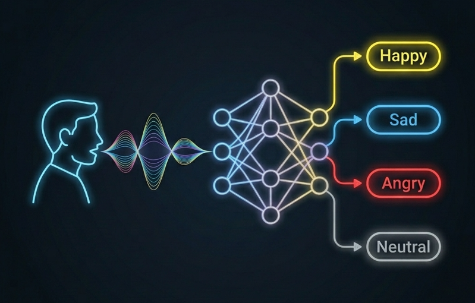
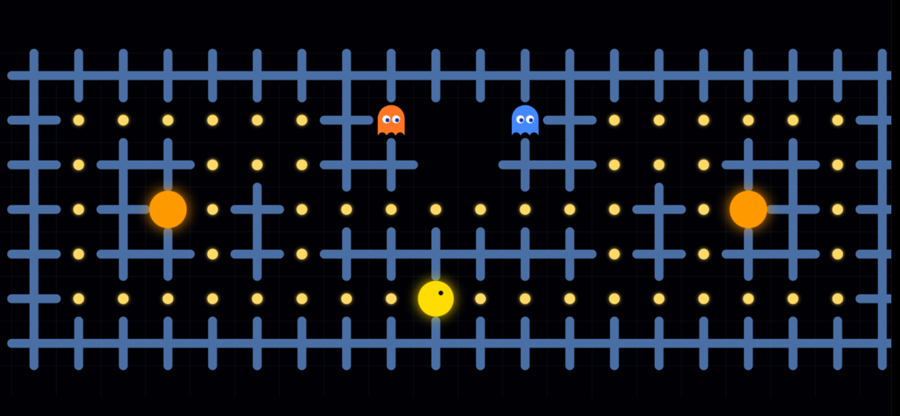
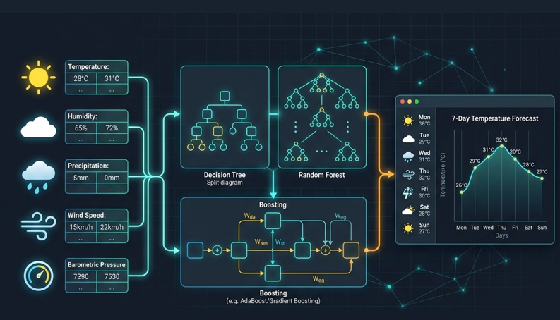

Hey, I'm Karthik Kosuri
AI/ML Enthusiast
I'm a passionate developer building intelligent solutions at the intersection of Machine Learning, Deep Learning, and Full-Stack Engineering. Creating performance-optimized interfaces and exploring new horizons in generative AI.
Crafting digital experiences that matter
I am currently pursuing my education at VIT-AP University (2023 – Present) with a CGPA of 8.99, having completed my Intermediate studies at Pragati Jr. College scoring 97.6%.
My technical interest lies deeply in developing smart, end-to-end applications. Through hands-on internships and independent projects, I have combined core Full-Stack technologies with advanced Artificial Intelligence pipelines.
My Tech Stack & Skills
Work Experience
SDE Intern
Glorious Enviro Space and Soft Technologies Pvt. Ltd.- Developed complete role-based web modules, creating dedicated dashboards and workflows for Admin, User, and Applicant profiles.
- Built a secure authentication and user management system using Supabase, focusing on data privacy and access control.
- Managed the full deployment of the web application on a Hostinger VPS (Ubuntu Linux), ensuring a stable and optimized server performance.
AI/ML Intern
Ecnodev IT Solutions Pvt. Ltd.- Built several Machine Learning and Generative AI projects, including a Customer Churn Prediction model, a RAG Chatbot, and a Smart Home system.
- Worked extensively with modern AI tools like Retrieval-Augmented Generation (RAG), Vector Databases, and embeddings to create reliable LLM applications.
- Contributed to an AI-powered Job Recommendation System, using deep learning to match candidate profiles with the right career opportunities.
Selected projects that showcase my expertise

92.89% AccSpeech Emotion Recognition
Ensemble pipeline classifying emotions from ~54,800 audio samples across 4 datasets. Features an optimized 1D CNN + CNN-BiLSTM architecture with LIME explainable AI integration.

Live DemoPacman AI
4 distinct AI agents for Pac-Man (Tabular Q-Learning, Approximate Q-Learning, SARSA, Heuristic Reflex) running alongside a React.js dashboard for real-time decision visualization.

Weather Prediction
Ensemble weather prediction system utilizing Decision Trees, Random Forests, SVMs, and Gradient Boosting over 10,000+ records, paired with a web UI for day-wise forecasts.
Recognition & contributions that define my path
Solved 100+ LeetCode Problems
Consistently solving Data Structures and Algorithms challenges to build solid problem-solving foundations.
LeetCode Profile ↗Oracle Cloud Infrastructure 2025 Generative AI Professional
Professional certification validating expertise in large language models, retrieval-augmented generation (RAG), and deploying generative AI solutions on Oracle Cloud.
View Certificate ↗Smart India Hackathon (SIH) Participant
Selected and actively participated in building solutions for national-level problem statements in SIH 2024 & 2025.
Deep Learning for Speech Emotion Recognition
Research on applying Convolutional Neural Networks and Bidirectional LSTMs to classify human emotions from speech audio signals with acoustic explainability.
View Publication ↗Reinforcement Learning applied to Pac-Man
Explored state-action values, feature-based Q-learning, Approximate Q-learning, and SARSA configurations for navigation intelligence in maze tasks.
View Publication ↗VoxAssist: Speech-to-Text Translation
Explored state-of-the-art open-source audio transcriber models, utilizing Whisper to build localized translation models from conversational speech inputs.
View Publication ↗